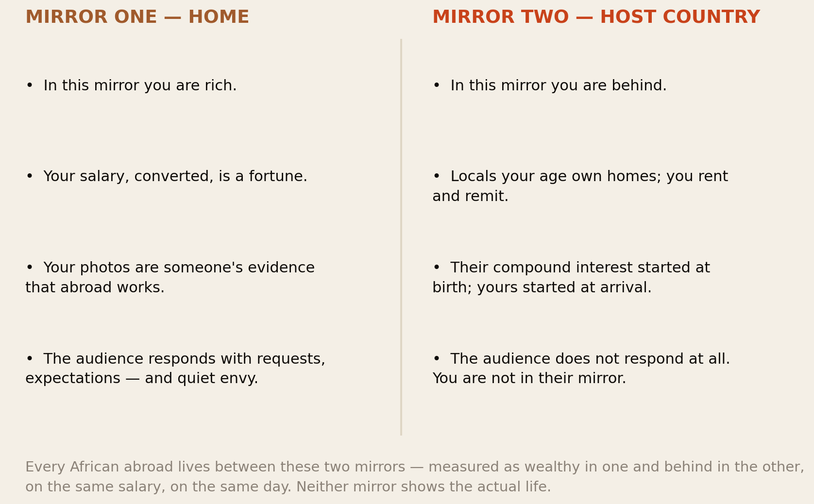
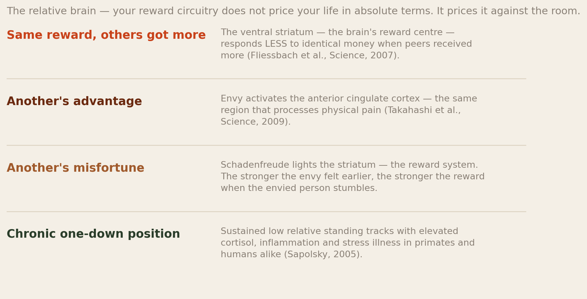
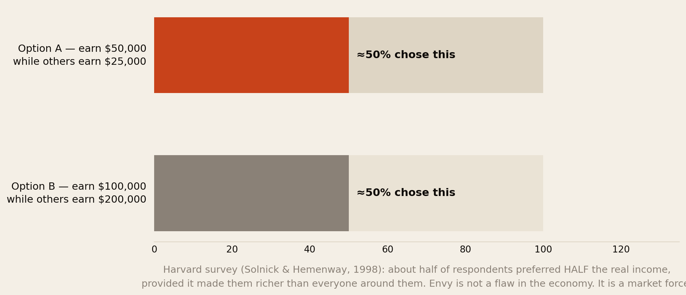
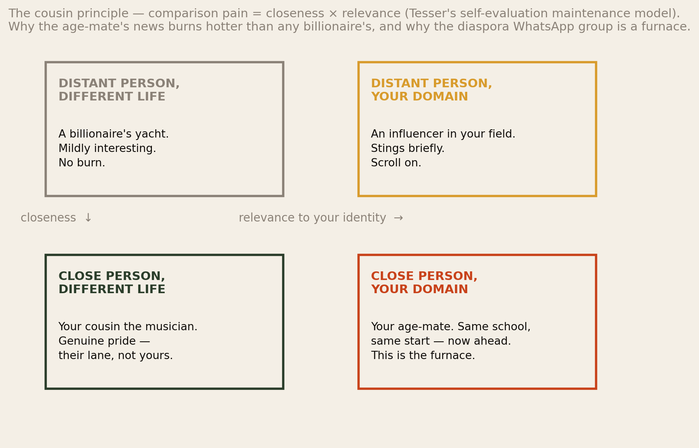
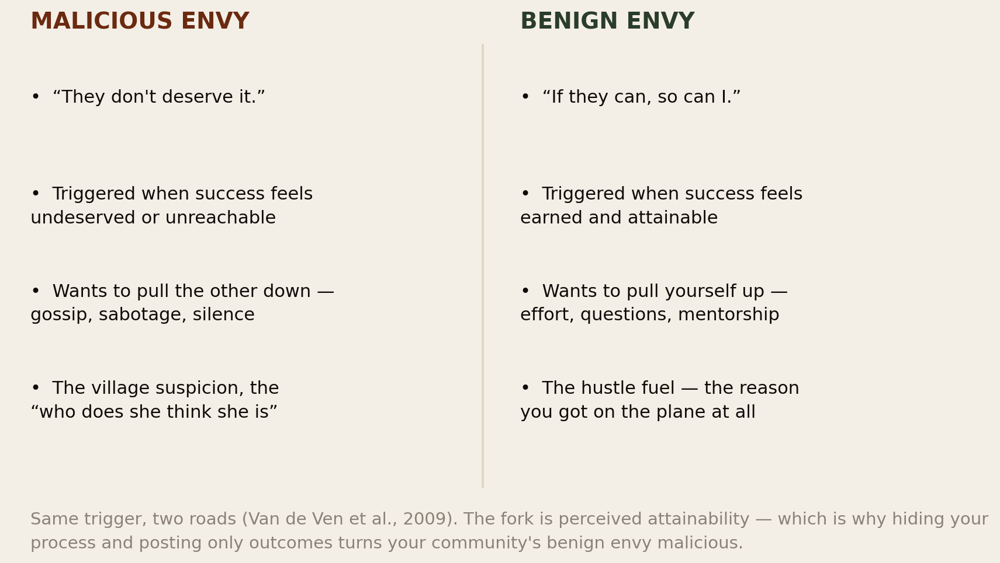
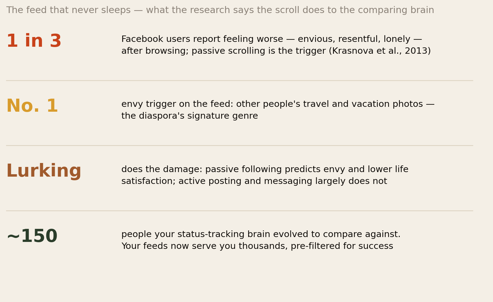
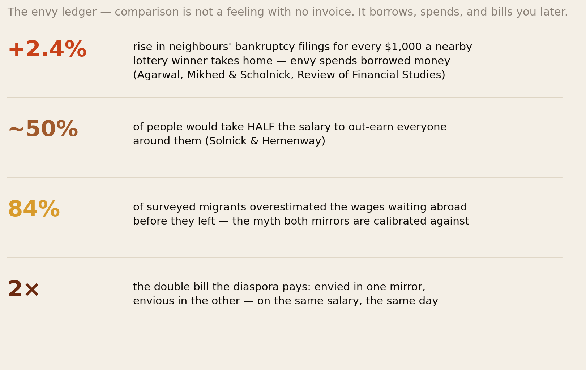
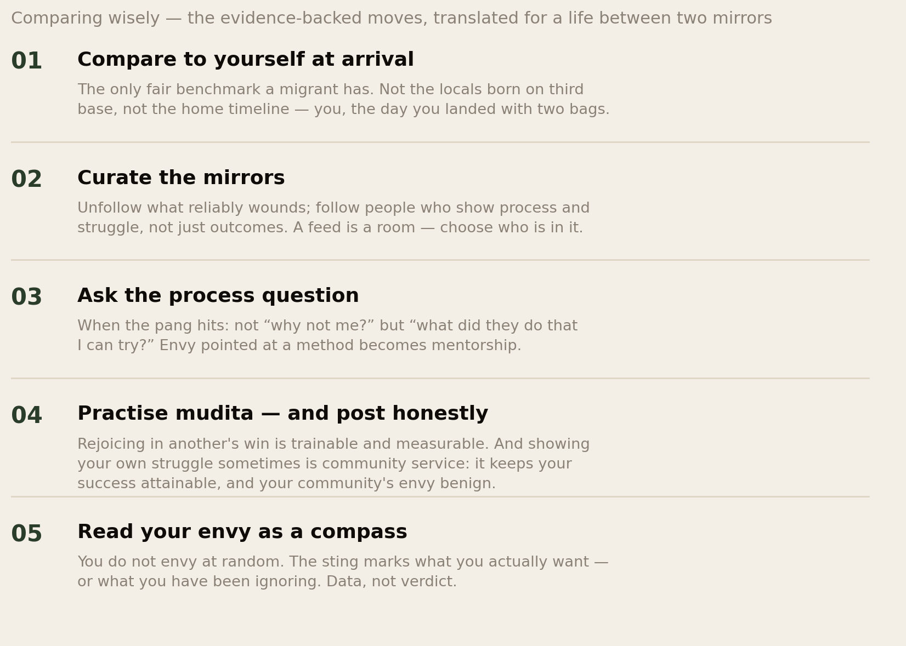

The Envy Economy.
Every African abroad is measured in two mirrors at once: rich in the one facing home, behind in the one facing the host country — on the same salary, on the same day. This report is about the machinery inside that double reflection: the brain that prices everything relatively, the half of humanity that would take half the salary to come first, the neighbour’s win that sends you to the moneylender — and what half a century of science says about living between mirrors without being broken by either.
Section 01The Short Version
A member of this network told us a story that fits in one sentence: on the same Sunday, her aunt in Kisumu asked when she would “remember those of us you left behind”, and her Canadian colleague asked, sympathetically, whether she was “still renting”. Two mirrors, one woman, one salary. This report is about the machinery behind that Sunday.
- Comparison is not a character flaw; it is the brain’s pricing system. fMRI studies show the reward circuitry responds to relative outcomes — the same money literally feels worse when a peer got more. In the classic Harvard survey, about half of respondents preferred $50,000 where others earn $25,000 over $100,000 where others earn $200,000 — half the real income, for the relative win.
- The pain is engineered to be strongest exactly where the diaspora lives. Tesser’s research shows comparison burns in proportion to closeness × relevance: the age-mate with your same start hurts more than any billionaire. The diaspora WhatsApp group is a machine for delivering close, relevant comparisons across nine time zones, daily.
- Migration doubles the reference groups. Psychology usually studies one comparison audience. The migrant has two: the home mirror, where your converted salary makes you rich and envied, and the host mirror, where locals your age started compounding at birth. You are simultaneously ahead and behind — and both mirrors are calibrated against fictions, because 84% of surveyed migrants overestimated the wages waiting abroad before they left.
- Envy has an invoice. For every $1,000 a lottery winner takes home, their neighbours’ bankruptcy filings rise 2.4% — comparison spends borrowed money. The diaspora edition is familiar: the December performance, the shipped car, the wedding that outruns income, the “rich relative” myth that inflates the black tax.
- The fix is not to stop comparing — that instinct is older than language. It is to compare wisely: against yourself at arrival rather than locals born on third base; against process rather than outcomes; with curated mirrors; and with the occasional honest post — because showing your struggle keeps your success attainable, and attainable success turns your community’s envy benign instead of malicious.
The envy economy has no currency of its own. It is denominated entirely in other people’s highlight reels — and everyone in it is both customer and vendor.
Section 02The Two Mirrors

Start with what makes the diaspora’s comparison problem genuinely different, because it is not just “more Instagram”. Reference-group research since the 1940s has shown that wellbeing tracks the group you compare against far more than your absolute condition. Migration performs a strange surgery on that machinery: it does not replace your reference group — it adds a second one and keeps both switched on.
Face the home mirror and you are wealthy: your salary converts into school fees for half a compound, your winter coat photographs like success, your very location is an achievement someone is praying for. Face the host mirror and the same life reads as behind: renting at an age your colleagues bought, starting a pension in your thirties, explaining your credentials to people younger than your discounted CV. Neither mirror is lying, exactly. Each is measuring a different economy with a different price level — but your nervous system does not apply purchasing-power adjustments to feelings. It simply receives both verdicts: you are envied, and you are behind, at once, forever.
And there is a third pane most people miss: the diaspora mirror — other Africans abroad, the truest comparison group of all, same start, same visa queues, same remittance load. Which is exactly why, as we will see in Section 05, it is the one that burns hottest.
Section 03The Oldest Instrument
The measuring instinct did not arrive with smartphones. In 1954, Leon Festinger formalised what became social comparison theory: humans have a basic drive to evaluate their abilities and opinions, and where objective standards are missing — am I successful? am I doing life right? — we measure against other people. Upward comparisons can inspire or crush; downward ones can comfort or breed complacency. Comparison itself is neither vice nor accident. It is navigation equipment.
The equipment is far older than Festinger. Status-tracking is primate infrastructure: rank determined food, safety and mates, so brains evolved to monitor standing continuously and to feel rank changes as emotions. Paul Gilbert’s social-rank research argues that much of our emotional palette is status machinery — pride signals a rise, shame signals a fall, and envy is the alarm that someone has something your survival systems have decided matters. Our shame report mapped the fall-detector; this report is about the alarm. One more inheritance matters: the system was tuned for villages of roughly 150 people — Dunbar’s number — where every comparison target was a real, whole, visible life. Keep that number in mind for Section 07.
Africa’s cultures, it should be said, have always known this machinery intimately — long before psychology named it. A continent that developed the evil eye, the praise singer, the age-grade system that compares only peers initiated together, and a thousand proverbs about the neighbour’s harvest did not need Festinger to tell it that humans measure. What tradition understood — and Section 11 returns to — is that comparison is a communal force requiring communal management.
Section 04The Relative Brain

The comparison instinct is not a bad habit layered on top of the brain; it is wired into how the brain prices reward. In Fliessbach and colleagues’ fMRI experiment, participants received identical money for identical work — and the ventral striatum, the reward centre, responded more when others got less and less when others got more. The bank balance was constant; the feeling was relative. Takahashi’s team completed the picture: envy activates the anterior cingulate cortex — a region that processes physical pain — while news of the envied person’s misfortune lights up the striatum. Schadenfreude is, neurally, a payday. When your first reaction to an age-mate’s setback shames you, it helps to know the reaction is circuitry, not character — and that what you do next is character.

How much does relative position actually weigh against real money? In the famous Harvard School of Public Health survey, respondents chose between earning $50,000 where others earn $25,000, and earning $100,000 where others earn $200,000. About half chose the first option — surrendering half their purchasing power to stand above the crowd. Positional concern was strongest for attractiveness and praise, weakest for vacation time. Anyone who has watched a diaspora wedding budget triple to impress a WhatsApp group has seen the finding replicate in the field. And the stakes are not only financial: Sapolsky’s primate work shows chronic one-down status tracks with cortisol, inflammation and illness. Feeling permanently behind is not just unpleasant. It is physiologically expensive — a tax the host mirror levies daily.
Section 05The Cousin Principle

Why does a stranger’s Lamborghini amuse you while your age-mate’s modest house keeps you up at night? Abraham Tesser’s self-evaluation maintenance research answers with an equation: comparison pain scales with how close the person is and how relevant their domain is to your identity. A distant person in a different life is entertainment. A close person in a different lane is pride — the cousin who sings gets your genuine applause. But a close person succeeding in your domain — same school, same start, same definition of success — is a direct audit of your self-concept. That is the furnace.
African social life runs unusually hot on this equation, because our cultures are built from precisely the materials Tesser flags. The age-mate is an institution: the person initiated with you, graduated with you, whose bride price and job title your mother knows to the shilling. The extended family is a permanently close comparison pool; the community “what will people say” audit keeps every domain relevant. And migration, far from loosening the equation, feeds it: the diaspora WhatsApp group curates your closest, most relevant comparisons — fellow Africans abroad, your exact cohort — and delivers their promotions, keys and gender reveals to your pocket at breakfast. Nobody lies awake over Elon Musk. They lie awake over Wanjiru from secondary school, who arrived in the same year, and just posted the house.
Section 06The Two Envies

Envy is not one emotion. The research distinguishes malicious envy — hostile, resentful, wanting to pull the other down — from benign envy, the admiring ache that makes you work harder. The fork between them is perceived attainability: when someone’s success looks earned and reachable, envy becomes fuel (“if they can, so can I” is, frankly, the sentence that filled every visa queue on the continent); when it looks undeserved or impossible, envy turns to poison — gossip, dismissal (“must be nice”, “you know how she got it”), and the quiet hope of a stumble.
African culture carries a rich folk theory of the malicious kind — the evil eye, the “bad belly”, the “village people” jokes that are only half jokes, the real fear that visible success invites spiritual attack. Strip the metaphysics and the sociology underneath is sound: communities correctly understood that unexplained, unshared success destabilises them, and built rituals — redistribution, feasts, deliberate modesty — to manage it. The attainability fork also hands the diaspora a practical lever most advice misses: you partly control which envy your success triggers in others. Post only outcomes — the car, the keys, the degree — and your success looks like magic: unattainable, and therefore malicious-envy bait. Show the process — the night shifts, the failed applications, the years — and the same success becomes a roadmap. Section 12 turns that into practice.
Section 07The Feed That Never Sleeps

Take the ancient machinery of Sections 03–06 and connect it to a global feed. In Krasnova and colleagues’ studies of Facebook users, one in three reported feeling worse — envious, resentful, lonelier — after browsing, with passive scrolling the trigger and travel photos the number-one envy stimulus. Note the mechanism: lurking does the damage, not posting. The brain evolved to compare against ~150 known, whole lives now scans thousands of strangers’ curated peaks — and, as Chou and Edge showed, concludes that everyone else is happier and having better lives.
The diaspora scroll is this problem squared, because the two mirrors of Section 02 each have a feed. One thumb-flick serves you a home-friend’s new build (“they’re leveling up while I pay rent abroad”), the next a local colleague’s lake house (“I will never catch up here”), the next a fellow diasporan’s citizenship post (“same year as me — what have I been doing?”). Three upward comparisons, three reference groups, ninety seconds — before your porridge. And each is a fiction: the new build has a loan on it, the lake house an inheritance behind it, the passport photo five years of paperwork cropped out of it. The feed is not a window into other lives. It is a market stall where each vendor displays only the ripest fruit — including, as Section 13 will insist, yours.
Section 08The Price of Keeping Up

If envy were only a feeling, this would be a wellness essay. It is also a balance-sheet item. The cleanest evidence comes from a natural experiment in Canada: using lottery wins as random shocks to neighbourhood status, Agarwal, Mikhed and Scholnick found that every $1,000 a winner took home raised subsequent bankruptcy filings among their close neighbours by 2.4% — strongest in low-income, high-inequality areas. The mechanism was visible in the bankrupts’ asset lists: conspicuous goods, bought on debt, to keep up. One person’s visible rise, other people’s borrowed spending. That is the envy economy in a single administrative dataset.
The diaspora runs its own editions of this experiment every year, and this library has already priced several: the wedding arms race, where celebrations outrun annual incomes because the real audience is the comparison pool; the December homecoming performance — the shipped car, the rounds bought for the whole bar, the two-week display that costs three months of margin; the plot bought because an age-mate bought one, unseen, uninspected, and gone. None of this is stupidity. It is Fig 3 acting itself out: when half of humanity will pay half its income for relative position, a visible-status purchase is not irrational — it is just expensive. The question this report wants you to ask is narrower and colder: who, exactly, is the audience for this purchase — and what do they contribute to your actual life?
Section 09The Myth of Abroad
Now turn the mirror around, because the diaspora is not only envy’s victim. To the home audience, you are the lottery winner next door — the visible rise against which cousins measure their own stalled queues. And that mirror, too, is calibrated against a fiction. In a study of migrants to Italy, 84% had overestimated the wages waiting for them before departure; research on migration expectations finds systematic over-optimism about life abroad. The myth of abroad is not personal vanity — it is a structural belief, maintained by a century of one-directional evidence: successful migrants photographed, failed migrations unphotographed.
Here is the trap: every African abroad is now a maintenance worker for that myth. You cannot post the warehouse shift, the racist landlord, the fourth rejection — partly pride, partly kindness (your mother would only worry), partly the shame audit waiting for any admission of struggle. So you post the graduation, the snow, the skyline. The home audience takes the photos as data, concludes abroad works exactly as advertised, and adjusts two behaviours accordingly: the remittance expectations that our black tax report priced — because a rich relative can obviously afford more — and the migration queue itself, restocked by your highlight reel. The performance is not free for you either: the researchers’ term is information asymmetry, but the lived version is loneliness — being envied for a life you cannot admit is hard, by the only people who truly know you. How long until it was worth it? measured how long that gap stays open. The envy economy’s cruellest trade is this one: both mirrors polishing their fictions at each other, both sides paying interest on images.
Section 10The Double Bill
Add up what the two mirrors charge, because naming the line items is half the audit:
- The upward bill (host mirror): chronic behindness. Not episodic envy but a baseline — the daily, structural comparison against people whose compounding started at birth, in a country that also discounts your name and your credentials. Sapolsky’s one-down physiology — cortisol, inflammation, depression risk — is the health footnote to that baseline; relative-deprivation research shows the feeling of being behind operates independently of your actual standard of living.
- The downward bill (home mirror): being envied. It sounds like a compliment and functions like a tax: inflated remittance expectations, requests priced off your imagined salary, the impossibility of saying “I can’t afford it” without being disbelieved — plus the quieter costs: friendships back home that curdle into transactions, the fear of the evil eye that makes you hide wins even from family, and the strange guilt of having “made it” into a life that does not feel made at all.
- The lateral bill (diaspora mirror): the furnace of Section 05. The comparison pool that best understands your life is also best equipped to wound you with theirs — and diaspora communities can develop a real malicious-envy culture: the success policed with “who does she think she is”, the business undermined from inside the community, the crab bucket that greets every climber. We flagged the pattern in the confidence report’s shadow side; here is its engine.
- The compound interest: every bill feeds the others. Feeling behind abroad makes the home performance more necessary (at least somewhere you are winning); the home performance inflates the envy and the expectations; the expectations deepen the financial squeeze that keeps you feeling behind abroad. The mirrors are not two problems. They are one loop.
Section 11What the Traditions Knew
The comparison problem is ancient, and the old solutions map remarkably well onto the modern findings — a convergence worth taking seriously:
- Buddhism trained the counter-emotion. Mudita — sympathetic joy, rejoicing in another’s success — is the direct antidote to envy, and it is trainable: compassion-training studies show a few weeks of practice increases positive affect and reduces hostility, reshaping the very circuits Section 04 mapped. “I’m glad it’s you” is a skill, not a temperament.
- Aristotle drew the fork first. His Rhetoric separates phthonos — envy that wants to strip the other — from zēlos, emulation: the moral discomfort that spurs you to rise. Twenty-four centuries before Van de Ven, the two envies were on the page.
- The Stoics changed the measuring stick. Epictetus called envy “a disease of the soul” and the Stoic move survives intact: measure yourself against your values, not the room. “Am I living according to what I control?” converts comparison from a status game into an integrity audit.
- And African traditions engineered the environment. Ubuntu’s premise — a person is a person through other persons — makes the neighbour’s success partly yours by definition; the harambee and the contribution list convert one family’s rise into communal stakeholding (hard to maliciously envy a graduation you helped fund); age-grade systems restricted comparison to true peers; and the deliberate modesty norms around wealth — understating harvests, sharing windfalls — were envy management, not superstition. The village knew what the feed forgot: comparison is safe only inside relationships thick enough to hold it.
Section 12Comparing Wisely

The research consensus is blunt: suppressing comparison fails, because the instinct is older than language. What works is redirecting it, and every move below has evidence behind it:
- Compare to yourself at arrival. Temporal comparison — you versus your past self — activates the motivation without the threat, and migrants hold a uniquely fair baseline: the person who landed with two suitcases and a phone number. Against Wanjiru’s house or a colleague’s inheritance, you will always lose something; against arrival-you, the language learned, the system decoded, the people carried — the growth is undeniable. It is also the only comparison that prices your actual handicaps: as the procrastination report put it, their compounding started at birth; yours started at the border.
- Curate the mirrors. Passive scrolling is the documented damage-dealer, so treat the feed as a room you furnish: unfollow or mute what reliably wounds (you owe nobody a front-row seat to your own diminishment), keep the accounts that show process and struggle, and convert lurking into contact — message the person whose post stung; the research says active engagement flips the effect, and the age-mate’s house feels different once you have heard about the loan.
- Ask the process question. When the pang hits, replace “why not me?” with “what did they do that I can try?” — the reframe that turns judgment into information and rivals into unwitting mentors. If the answer is a method, copy it. If the answer is an inheritance, the comparison was never valid and you may put it down.
- Practise mudita — and post honestly sometimes. Congratulate fully, out loud, first — the trainable skill that protects both your circuitry and your community. And occasionally show your own process: the honest post about the hard year is community service in the envy economy — it keeps your success attainable (benign-envy territory), deflates the myth of abroad one data point at a time, and gives someone in your mirror permission to stop performing too. Our honest questions series exists because seven thousand people were waiting for exactly that permission.
- Read your envy as a compass. You do not envy at random — the sting marks what you actually value, which makes each pang a free diagnostic: envy of the founder but not the surgeon says something; envy of the friend who moved home says more. Ask what this one is pointing at — sometimes it is a goal to chase, and sometimes it is a value you have been outsourcing to other people’s scoreboards.
Section 13The Uncomfortable Part
First: you are not only the customer in the envy economy — you are also a vendor. The same person wounded by the feed curates one. Your December photos, your graduation post, your careful silence about the warehouse years — someone in Kitale measures their life against that highlight reel the way you measure yours against a colleague’s lake house. This is not an accusation; it is bookkeeping. But it collapses the comfortable story in which envy is something done to us. Every mirror has two sides, and the fastest way to soften the economy is for its vendors to start labelling their goods honestly.
Second: some of what the diaspora calls envy is actually grief, and some of what it calls hustle is actually envy. The pang at the friend who stayed home and thrived is often not wanting their life — it is mourning the version of yours that stayed. Naming it grief changes what heals it. And conversely: an ambition that only activates when an age-mate posts — the degree started after their graduation, the business launched after their launch — is not a vision, it is a reaction. A life steered by other people’s milestones arrives at other people’s destinations.
Third: the community’s malicious envy is real, and pretending otherwise protects it. The crab bucket is not a colonial invention or a stereotype — it is what Section 06 predicts when success looks unattainable and unshared inside a tight group under scarcity. The diaspora business quietly boycotted from within, the achiever cut down with “she has forgotten herself”, the return home downplayed to avoid the eye — these are our own line items, and they answer to our own tools: make success legible (show process), make it communal (the harambee principle — stakeholders do not sabotage), and call the behaviour what it is when it surfaces. A community that can celebrate its winners without auditing them — and whose winners can be honest without performing — has exited the worst of the envy economy, whatever the feeds are doing.
Section 14Method & Limits
This report combines social-comparison research, neuroscience, behavioural economics and migration studies, as at 31 August 2026.
- The core psychology is the replicated canon — Festinger (1954), Tesser’s self-evaluation maintenance model, Van de Ven’s benign/malicious envy distinction, and the fMRI findings on relative reward (Fliessbach) and envy/schadenfreude (Takahashi). Neuroimaging studies use small samples and reverse inference has limits; we use them as converging evidence, not proof by brain scan.
- The Solnick & Hemenway survey polled 257 Harvard-affiliated respondents in 1995 — a specific population, and stated preferences rather than behaviour. Its finding, however, sits on a large literature on positional concerns and relative income that points the same way.
- The lottery-bankruptcy result (Agarwal, Mikhed & Scholnick) is a quasi-experiment from one Canadian province with small average win sizes; the 2.4%-per-$1,000 figure is an estimate with confidence intervals, not a universal constant. We cite it for the mechanism — visible peer income causing debt-financed status spending — which the authors document directly in balance-sheet data.
- The Facebook findings (Krasnova et al., 2013; Chou & Edge, 2012) predate today’s platforms; TikTok and Instagram are structurally more comparison-dense than 2013 Facebook, which likely makes these estimates conservative, but we cannot show that directly.
- The 84% wage-overestimate figure comes from one 2015 study of migrants to Italy; the direction (systematic over-optimism about abroad) is well replicated across migration-expectations research, the exact percentage is not.
- No study, to our knowledge, has measured the double-reference-group effect in African diaspora populations directly. The two-mirrors framework of Sections 02, 09 and 10 is our synthesis of established mechanisms (reference groups, information asymmetry in remittances, positional spending) applied to diaspora life — labelled as argument, not measurement. The same holds for Section 11’s reading of African social institutions as envy management: plausible, sourced from ethnographic tradition, not experimentally tested.
- The framework reached us partly through a secondary source — Mark Manson’s Social Comparison Guide, shared by a member of this network. We went to the primary papers it cites — Festinger, Tesser, Van de Ven, Fliessbach, Takahashi, Krasnova, Lockwood & Kunda, Neff — and cite those; the guide is credited as the pointer, not as evidence.
- Nothing here is clinical advice. Comparison that has curdled into persistent depression, anxiety or rumination deserves a professional conversation, not a better feed.
Principal sources: Festinger (1954), A Theory of Social Comparison Processes; Tesser (1988) on self-evaluation maintenance; Van de Ven, Zeelenberg & Pieters (2009) on benign and malicious envy; Fliessbach et al. (2007) and Takahashi et al. (2009) in Science on the neuroscience; Solnick & Hemenway (1998) on positional concerns; Agarwal, Mikhed & Scholnick (2020) in the Review of Financial Studies on lottery wins and neighbouring bankruptcies; Krasnova et al. (2013) on Facebook envy and Chou & Edge (2012) on perceptions of others’ lives; Migration Policy Centre research on migrants’ wage expectations; Klimecki et al. (2013) on compassion training; Sapolsky (2005) on social hierarchy and health; Lockwood & Kunda (1997) on role models. Located partly via Mark Manson’s Social Comparison Guide.
Companion reports: What Will People Say?, The Black Tax Ledger, The Price of “I Do”, The Most Optimistic People on Earth and The Cost of Later.
The diaspora helps the diaspora.
Africa Global Forum is a peer network for Africans abroad — help each other, sit together, and bounce ideas. This research is part of an open library, free to read and share.